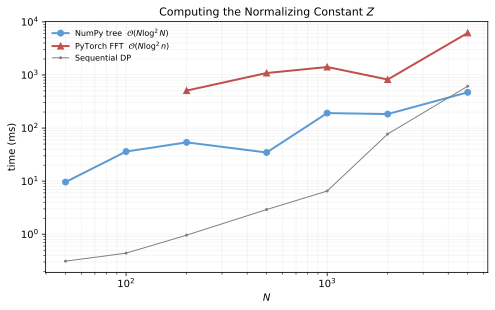
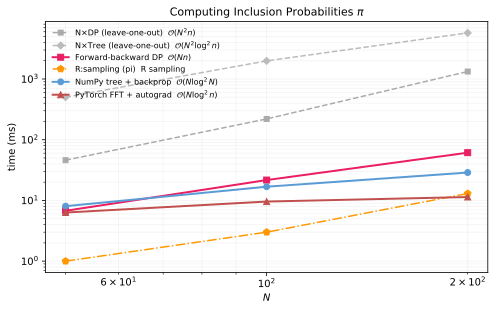
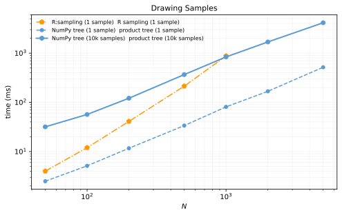

✓ = numerically verified—each links to its test case in test_identities.py.
Suppose you want to draw a random subset of exactly $n$ items from a universe of $N$ items, where each item $i$ has a positive weight $\w_i$.We assume $\w_i \in (0, \infty)$. This is without loss of generality: items with $\w_i = 0$ are excluded from the universe (they are never selected), and items with $\w_i = \infty$ are deterministically included (reduce $n$ and $N$ by 1 each). The general case reduces to the finite positive case by preprocessing. The conditional Poisson distribution assigns each size-$n$ subset a probability proportional to the product of its weights:✓
$$ \Ps(S) \propto \mathbf{1}\big[ |S| = n\big] \prod_{i \in S} \w_i $$
The normalizing constant $\Zw{\bw}{n} \defeq \sum_{|S|=n} \prod_{i \in S} \w_i$ is a weighted generalization of the binomial coefficient, which recovers $\binom{N}{n} = \Zw{\bw}{n}$ when $\bw = \mathbf{1}^N$.✓
Inclusion probabilities. The inclusion probability $\pip_i \defeq \sum_{S} \Ps(S)\, \mathbf{1}[i \in S]$. Higher weight means higher inclusion probability, but the relationship is nonlinear because the other weights also matter—doubling $\w_i$ does not double $\pip_i$, as the other items push back through the size constraint $|S| = n$. Later in this article, we provide an interactive widget for exploring the nonlinear relationship between $\bw$ and $\bpip$.
Why is this distribution special? The conditional Poisson distribution is an exponential family with natural parameters $\theta_i \defeq \log \w_i$ and sufficient statistics $\mathbf{1}[i \in S]$. Among all distributions over size-$n$ subsets with prescribed inclusion probabilities $\pip_i = P(i \in S)$, it is the unique maximum-entropy one✓—making the fewest assumptions beyond the marginals (Jaynes, 1957; Chen, Dempster & Liu, 1994), in the same sense that the Gaussian is max-entropy for given mean and variance. The log-normalizer $\log \Zw{\bw}{n}$ is convex in $\btheta$, so many properties follow mechanically: inclusion probabilities are the gradient ($\pip_i = \partial \log \Z / \partial \theta_i$) and fitting $\btheta$ to target inclusion probabilities is a convex optimization problem. The distribution is also called the exponential fixed-size design for this reason.
Relationship to Poisson sampling. In Poisson sampling,Named after mathematician Siméon Denis Poisson. Although poisson is the French word for fish, no fishing metaphor is intended. each item $i$ is included independently with probability $p_i$, so the sample size $|S| = \sum_i \mathbf{1}[i \in S]$ is random. The conditional Poisson distribution conditions on $|S| = n$ exactly—fixing the sample size while preserving the relative inclusion odds. Under Poisson sampling, each item's inclusion probability is simply $\pip_i = p_i$; conditioning on $|S| = n$ makes $\pip_i$ depend on all the other weights too, which is what makes computing $\bpip$ nontrivial. The weight $\w_i$ is the odds of the $i$th coin: $\w_i \defeq p_i / (1 - p_i)$, equivalently $p_i = \w_i/(1+\w_i)$.✓
Sampling without replacement. The following construction shows how conditional Poisson can be used for sampling without replacement. Draw $n$ items independently from the categorical distribution over weights, and keep only the samples where all draws are distinct:
$\bw' \leftarrow \bw / \sum_i \w_i$
repeat
$\quad$ Draw $s_1, \ldots, s_n \overset{\text{i.i.d.}}{\sim} \text{Categorical}(\bw')$
$\quad$ $S \leftarrow \{s_1, \ldots, s_n\}$
until $|S| = n$ (all draws are distinct)
return $S$
The resulting distribution over size-$n$ subsets is exactly $\Ps(S)$.✓ This rejection sampler is not a practical sampling algorithm;The acceptance probability of this construction is $n! \cdot \Zw{\bw}{n} / \W^n$.✓ it simply establishes what the distribution is. We will derive sampling algorithms that sample from $\Ps(S)$ efficiently.
What this post covers. The computational challenges are: computing $\Zw{\bw}{n}$ and $\Ps(S)$, computing $\bpip$ from $\bw$, drawing exact samples $S \sim \Ps$, and the inverse problem of finding $\bw$ from target $\bpip$. This post gives efficient algorithms for all four—in $\mathcal{O}(N \log^2 n)$ time using a polynomial product tree.
Software. The code is available as a Python library. As far as I can tell, this is the only publicly available library for conditional Poisson sampling in Python (or any language outside of R's survey-sampling packages). Existing R implementations—UPmaxentropy in the sampling package and the BalancedSampling package—use either rejection sampling or $\mathcal{O}(Nn)$ dynamic programming. The product-tree algorithm used here does not appear in any prior software that I could find.
Interactive explorer. Drag the weight bars to see how changing $\w_i$ affects the subset probabilities $\Ps(S)$ and inclusion probabilities $\pip_i$. Drag the $\pip_i$ bars to solve the inverse problem: find weights that produce given inclusion probabilities. Use the $N$ and $n$ controls to change the problem size.
Computing $\Zw{\bw}{n}$, $\bpip$, and Samples
The key idea is that $\Zw{\bw}{n}$ is hiding inside a product of polynomials:
$$ (1 + \w_1 \z)(1 + \w_2 \z) \cdots (1 + \w_N \z) = \sum_{k=0}^{N} \Zw{\bw}{k}\, \z^k $$
Why does this work? When you expand the product, each factor $(1 + \w_i \z)$ contributes either $1$ (item $i$ excluded) or $\w_i \z$ (item $i$ included). A single term in the expansion picks one choice per factor, giving $\prod_{i \in S} \w_i \cdot \z^{|S|}$ for some subset $S$. The exponent of $\z$ counts how many items were included. Summing over all $2^N$ terms and collecting by powers of $\z$, the coefficient of $\z^k$ is exactly $\sum_{|S|=k} \prod_{i \in S} \w_i = \Zw{\bw}{k}$.
So the $n$th coefficient is exactly $\Zw{\bw}{n}$, the normalizing constant.✓ This product can be computed in $\mathcal{O}(N \log^2 n)$ time using a divide-and-conquer strategy on a binary tree—a standard technique from computer algebra known as the subproduct tree (see von zur Gathen & Gerhard (2013), Chapter 10).
Polynomials as arrays. In code, a polynomial like $1 + 3\z + 2\z^2$ is just the array [1, 3, 2]. The $\z$ is a formal variable—we never substitute a number into it; it just tracks which coefficient is which. Multiplying two polynomials corresponds to convolving their coefficient arrays—for example, $(1 + 2\z)(1 + 3\z)$ convolves [1, 2] with [1, 3] to get [1, 5, 6]. It turns out that convolution can be done efficiently using the fast Fourier transform (FFT), costing $\mathcal{O}(d \log d)$ where $d$ is the degree, rather than $\mathcal{O}(d^2)$ for the schoolbook method. This is the key fact that makes the product tree $\mathcal{O}(N \log^2 n)$ instead of $\mathcal{O}(Nn)$.
Notation. We write $\llbracket f \rrbracket(\z^k)$ for the coefficient of $\z^k$ in a formal power series $f(\z) = \sum_k a_k \z^k$, i.e., $\llbracket f \rrbracket(\z^k) = a_k$. This is sometimes written $[\z^k]\, f(\z)$; we use the Scott bracket notation to avoid ambiguity with other uses of square brackets.
Computing the Normalizing Constant $\Z$
Each leaf of a complete binary tree holds one degree-1 polynomial $(1 + \w_i \z)$. Internal nodes multiply their children's polynomials. The root holds the full product, whose $n$th coefficient is $\Zw{\bw}{n}$.
Interactive product tree. Drag the weight sliders to see how changing $\w_i$ affects the polynomial coefficients at every node. The tree builds the product $\prod_i(1 + \w_i \z)$ bottom-up; the $n$th coefficient at the root (highlighted in red) is the normalizing constant $\Z$. Use the $N$ and $n$ controls to change the problem size.
Complexity. At each level of the tree, the total size of the polynomials being multiplied is $\mathcal{O}(N)$, and each multiplication is done via FFT in $\mathcal{O}(d \log d)$ time where $d$ is the degree. The recurrence is
$$T(N) = 2\,T(N/2) + \mathcal{O}(N \log N), \quad T(1) = \mathcal{O}(1)$$
which solves to $T(N) = \mathcal{O}(N \log^2 n)$ by the Master Theorem. The complexity is $\mathcal{O}(N \log^2 n)$ rather than $\mathcal{O}(N \log^2 N)$ because we only need the coefficient at $\z^n$: intermediate polynomials can be truncated to degree $n$ without affecting the result. (Convolution of two polynomials truncated to degree $n$ still gives the correct coefficients up to degree $n$.) This reduces both the polynomial sizes and the FFT costs throughout the tree.
Computing Inclusion Probabilities $\bpip$
The inclusion probability is the gradient of the log-normalizer (an exponential family identity):
$$\pip_i \defeq \frac{\partial \log \Zw{\bw}{n}}{\partial \theta_i}$$
Since the product tree already computes $\log \Zw{\bw}{n}$, we get $\bpip$ by running backpropagation on the same tree—no new algorithm needed. By the Baur-Strassen theorem (1983), the gradient costs at most a constant factor more than the forward computation.
The key insight: forward + backprop. Computing $\pip_i$ requires the "leave-one-out" product $\prod_{j \neq i}(1 + \w_j \z)$—a single item removed from the full product. A naive approach recomputes this from scratch for each $i$, giving $\mathcal{O}(N^2 n)$ total. But any differentiable forward pass that computes $\log \Z$—whether the $\mathcal{O}(Nn)$ Pascal DP or the $\mathcal{O}(N \log^2 n)$ product tree—gives all $N$ inclusion probabilities via a single backpropagation pass at the same asymptotic cost. This is a general principle: backprop computes the gradient of any scalar output for free (up to a small constant factor). The product tree is just the fastest known forward pass; the gradient follows mechanically.
In the PyTorch implementation, the gradient comes for free via torch.autograd—no hand-coded tree traversal needed.
Interactive backpropagation tree. Each node shows the forward polynomial coefficients (blue, top) and the adjoint $\bar{c}_k$ (purple, bottom). The seed $\bar{c}_n = 1/Z$ at the root flows upward; at each node, the child's adjoint is the cross-correlation of the parent adjoint with the sibling polynomial. At the leaves, $\pip_i = \w_i \cdot \bar{c}_1^{(i)}$. Drag the weight sliders to explore.
Drawing Exact Samples
Sampling reuses the product tree (no gradient computation needed). Starting at the root with a quota of $k = n$ items to select, we walk top-down: at each internal node, randomly split the quota between the left and right subtrees. The probability of assigning $j$ items to the left is proportional to $\llbracket P_\text{left} \rrbracket(\z^j) \cdot \llbracket P_\text{right} \rrbracket(\z^{k-j})$. This is exact, not approximate—it follows from the weighted Vandermonde identity: $\Zw{(\ba;\, \bb)}{k} = \sum_{j=0}^{k} \Zw{\ba}{j} \cdot \Zw{\bb}{k-j}$, which says the number of ways to choose $k$ items from $A \cup B$ is the convolution of the two groups' counts. Each term in the sum is the conditional probability of a particular left/right split. At the leaves, quota 1 means "include this item"; quota 0 means "exclude."
In pseudocode:
def $\text{sample}(a, k)$: // sample $k$ items from subtree $a$
$\quad$ if $a$ is a leaf: return $\{a\text{.item}\}$ if $k = 1$, else $\emptyset$
$\quad$ Let $b, c$ be the children of $a$
$\quad$ $p_j \leftarrow b\text{.poly}[j] \cdot c\text{.poly}[k{-}j]$ for $j \in 0, \ldots, k$
$\quad$ Draw $j \sim \text{Categorical}(\boldsymbol{p})$
$\quad$ return $\text{sample}(b, j) \cup \text{sample}(c, k{-}j)$
$S \leftarrow \text{sample}(\text{root}, n)$
The tree is built once ($\mathcal{O}(N \log^2 N)$) and reused for each sample ($\mathcal{O}(n \log N)$ per sample)—at each of the $\mathcal{O}(\log N)$ levels, only nodes whose quota is nonzero are visited, and there are at most $n$ such nodes. (When $n \approx N$, nearly all nodes are visited, so the per-sample cost approaches $\mathcal{O}(N \log N)$.) No $\binom{N}{n}$-sized table is ever constructed.
All computations are verified against brute-force enumeration in the test suite.
Basic Usage
Now that we've seen how the product tree works under the hood, here's the library interface.
from conditional_poisson_numpy import ConditionalPoisson
import numpy as np
w = np.array([0.68, 1.02, 0.55, 1.63, 0.67, 2.82])
n = 3
cp = ConditionalPoisson.from_weights(n, w)
cp.log_normalizer # log Z(w, n)
cp.pi # inclusion probabilities (sum to n)
cp.sample(10_000) # draw 10k exact samples
# Inverse problem: find weights from target inclusion probabilities
cp_fit = ConditionalPoisson.fit(cp.pi, n)
The Poisson Approximation
The inclusion probabilities $\pip_i = P(i \in S)$ always sum to $n$,✓ and each $\pip_i \in [0, 1]$.✓ Items with larger weights get higher inclusion probabilities, but the relationship is nonlinear—the other weights push back through the size constraint $|S| = n$.
Poisson approximation. If each item were included independently with probability $p_i = \w_i r/(1+\w_i r)$, where $r$ is the tilting parameter that makes $\sum_i p_i = n$, we would get
$$\pip_i \;\approx\; \frac{\w_i \, r}{1 + \w_i \, r}.$$
The actual inclusion probabilities are close but not identical—Hájek (1964, Theorem 5.2) showed that $\pip_i = p_i + \mathcal{O}(1/N)$. This means initializing $\theta_i^{(0)} = \text{logit}(\piptgt_i)$ gives a warm start that is off by at most $\mathcal{O}(1/N)$ for the fitting optimizer.
Weights vs. inclusion probabilities. The curve shows the Poisson approximation $p_i = \w_i r/(1+\w_i r)$; the dots show the exact $\pip_i$ (computed via the product tree). Drag any dot horizontally to change its weight and see both update. Use the controls to change $N$ and $n$ or resample weights.
Fitting Weights to Target Probabilities
A common use case: you know the inclusion probabilities you want and need to find weights that produce them.✓
Objective. Given target inclusion probabilities $\bpiptgt$, we find weights $\bw$ (equivalently, log-weights $\btheta$ where $\theta_i = \log \w_i$) by maximizing
$$ \ell(\btheta) \defeq \bpiptgt^{\top} \btheta - \log \Zw{\bw}{n} $$
This is concave, so any local maximum is global.
Why this objective?
We want the "least biased" distribution over size-$n$ subsets that hits the target inclusion probabilities—that is, the one with maximum entropy.
The primal problem. Find the distribution $\Ps$ over size-$n$ subsets that maximizes entropy subject to the inclusion-probability constraints:
$$ \max_{\Ps \in \triangle^{\binom{\mathcal{S}}{n}}} H(\Ps) \quad \text{subject to} \quad \mathbb{E}_{\Ps}[\mathbf{1}[i \in S]] = \piptgt_i \;\; \text{for } 1 \le i \le N $$
where $H(\Ps) \defeq -\sum_S \Ps(S) \log \Ps(S)$ is the Shannon entropy. This is a convex optimization problem (maximizing a concave function over a convex set with linear constraints), so it has a unique solution. However, the optimization variable $\Ps$ lives in a space with $\binom{N}{n}$ dimensions—one probability per subset—so we cannot solve it directly.
The Lagrangian. To handle the $N$ inclusion-probability constraints, introduce a multiplier $\theta_i$ for each one:
$$ \mathcal{L}(\Ps, \btheta) = H(\Ps) + \sum_i \theta_i \big(\mathbb{E}_{\Ps}[\mathbf{1}[i \in S]] - \piptgt_i\big) $$
The key property: if $\Ps$ violates any constraint, the corresponding $\theta_i$ can be driven to $\pm\infty$ to make $\mathcal{L}(\Ps, \btheta) \to -\infty$. So $\max_{\Ps} \min_{\btheta} \mathcal{L}(\Ps, \btheta)$ has the same solution as the constrained problem—the constraints are enforced by the multipliers rather than explicitly.
Solving for $\Ps$ given $\btheta$. For fixed $\btheta$, we maximize $\mathcal{L}(\Ps, \btheta)$ over distributions $\Ps$. Writing out the expectation as $\mathbb{E}_{\Ps}[\mathbf{1}[i \in S]] = \sum_S \Ps(S)\, \mathbf{1}[i \in S]$ and taking the derivative with respect to each $\Ps(S)$:
$$ \frac{\partial \mathcal{L}(\Ps, \btheta)}{\partial \Ps(S)} = -\log \Ps(S) - 1 + \sum_{i \in S} \theta_i $$
Setting this to zero gives $\Ps(S) \propto \exp\!\big(\sum_{i \in S} \theta_i\big)$. (We don't need a separate multiplier for the normalization constraint $\sum_S \Ps(S) = 1$ because we can absorb it into the proportionality constant.) After normalizing over size-$n$ subsets:
$$ \Ps(S) = \exp\!\Big(\sum_{i \in S} \theta_i - \log \Zw{\bw}{n}\Big) $$
where $\w_i \defeq e^{\theta_i}$ and $\Zw{\bw}{n} \defeq \sum_{|S|=n} \prod_{i \in S} \w_i$ is the normalizing constant. This is exactly the conditional Poisson distribution! So the max-entropy distribution with inclusion-probability constraints must be a CPS distribution—the only question is which weights.
Eliminating $\Ps$. Now substitute this optimal $\Ps$ back into $\mathcal{L}(\Ps, \btheta)$ to get a function of $\btheta$ alone. The inclusion probabilities under $\Ps$ are $\mathbb{E}_{\Ps}[\mathbf{1}[i \in S]] = \pip_i(\btheta)$, so:
$$ \mathcal{L}(\Ps, \btheta) = H(\Ps) + \sum_i \theta_i \big(\pip_i(\btheta) - \piptgt_i\big) $$
We need $H(\Ps)$. Since $\log \Ps(S) = \sum_{i \in S} \theta_i - \log \Zw{\bw}{n}$:
$$ \begin{align} H(\Ps) &= -\sum_S \Ps(S) \log \Ps(S) \\ &= -\sum_S \Ps(S)\Big(\sum_{i \in S} \theta_i - \log \Zw{\bw}{n}\Big) \\ &= \log \Zw{\bw}{n} - \bpip(\btheta)^\top \btheta \end{align} $$
where the last step uses $\sum_S \Ps(S) \sum_{i \in S} \theta_i = \sum_i \theta_i \pip_i(\btheta) = \bpip(\btheta)^\top \btheta$. Substituting $H(\Ps)$ into $\mathcal{L}(\Ps, \btheta)$:
$$ \begin{align} \mathcal{L}(\Ps, \btheta) &= \big(\log \Zw{\bw}{n} - \bpip(\btheta)^\top \btheta\big) + \bpip(\btheta)^\top \btheta - \bpiptgt^{\top} \btheta \\ &= \log \Zw{\bw}{n} - \bpiptgt^{\top} \btheta \end{align} $$
The $\bpip(\btheta)$ terms cancel, leaving a clean function of $\btheta$ alone.
The dual problem. The dual minimizes $\mathcal{L}(\Ps, \btheta)$ over $\btheta$. Negating to turn this into a maximization, we get $\ell(\btheta) \defeq \bpiptgt^{\top}\btheta - \log \Zw{\bw}{n}$. This is concave because $\log \Zw{\bw}{n}$ is convex in $\btheta$ (it is a log of a sum of exponentials).
Why it works. Because the inclusion-probability constraints are linear in $\Ps$ and a feasible $\Ps$ exists (whenever $0 < \piptgt_i < 1$ and $\sum_i \piptgt_i = n$), there is no gap between the primal and dual optima. So the optimal $\btheta$ from the dual gives weights $\w_i = e^{\theta_i}$ whose conditional Poisson distribution solves the primal: it achieves maximum entropy among all distributions over size-$n$ subsets, and its inclusion probabilities match the targets exactly, $\bpip(\btheta) = \bpiptgt$.
Gradient. $\nabla_{\btheta} \ell(\btheta) = \bpiptgt - \bpip(\btheta)$.✓ At the optimum, $\bpip(\btheta) = \bpiptgt$ exactly, so the gradient is zero. Each evaluation of $\ell(\btheta)$ and $\nabla \ell(\btheta)$ costs $\mathcal{O}(N \log^2 n)$: one pass through the product tree + backpropagation.
Optimizer. L-BFGS converges in a few iterations using only the gradient—no second-order machinery needed. The Poisson approximation provides a warm start: $\theta_i^{(0)} = \text{logit}(\piptgt_i)$, which has initialization error $\mathcal{O}(1/N)$ per item.
# Target: the inclusion probabilities from our earlier example
pi_star = cp.pi.copy()
# Fit from scratch
cp_fit = ConditionalPoisson.fit(pi_star, n, verbose=True)
iter 0: max|pi*-pi| = 3.332e-02 iter 1: max|pi*-pi| = 2.606e-03 iter 2: max|pi*-pi| = 2.036e-05 iter 3: max|pi*-pi| = 1.994e-09 iter 4: max|pi*-pi| = 7.661e-15
Timing
The plots below compare wall-clock time across methods for the three main operations: computing the normalizing constant $\Z$, computing inclusion probabilities $\bpip$, and drawing samples. All timings use $n = 0.4N$ with weights drawn from $\text{Exp}(1)$. Source code for each method is linked via the ✓ pills; the full benchmark script is bench_timing.py.
Computing $\Z$
Three methods for computing the normalizing constant: ✓ DP forward pass $\mathcal{O}(Nn)$ · ✓ NumPy product tree $\mathcal{O}(N \log^2 N)$ · ✓ PyTorch FFT tree $\mathcal{O}(N \log^2 n)$

The DP approach is fastest at small $N$ (no overhead), but the FFT tree overtakes it by $N \approx 200$ and is $\sim\!100\times$ faster by $N = 5000$.
Computing $\bpip$
This is the main event. The naive approach computes each $\pip_i$ independently via a leave-one-out forward pass; backpropagation replaces $N$ forward passes with a single backward pass, giving a factor-of-$N$ speedup:
✓ $N \times$ DP leave-one-out $\mathcal{O}(N^2 n)$ ·
✓ $N \times$ Tree leave-one-out $\mathcal{O}(N^2 \log^2 n)$ ·
✓ Forward-backward DP $\mathcal{O}(Nn)$ ·
✓ R sampling package ·
✓ NumPy tree + backprop $\mathcal{O}(N \log^2 N)$ ·
✓ PyTorch FFT + autograd $\mathcal{O}(N \log^2 n)$

The leave-one-out methods (gray, dashed) are $\sim\!N\times$ slower than their backprop counterparts—this is the Baur-Strassen theorem in action. The PyTorch FFT implementation is the fastest overall, combining FFT-based polynomial multiplication ($\mathcal{O}(d \log d)$ per multiply), batched execution ($\mathcal{O}(\log N)$ torch calls), and autograd.
Drawing Samples
✓ R sampling::UPmaxentropy (1 sample) ·
✓ R BalancedSampling::lpm2 (1 sample) ·
✓ Product tree quota splitting $\mathcal{O}(n \log N)$/sample (1 and 10k samples)

The R sampling package draws one conditional Poisson sample per call at $\mathcal{O}(Nn)$ cost. The product tree's quota-splitting sampler costs $\mathcal{O}(n \log N)$ per sample after a one-time $\mathcal{O}(N \log^2 n)$ tree build—the amortized cost drops rapidly with more samples. BalancedSampling::lpm2 (local pivotal method) is very fast but is a different algorithm; it does not sample from the conditional Poisson distribution.
Scaling in $N$ and $n$
The static plots above fix $n = 0.4N$. The interactive 3D plots below sweep $N$ and $n$ independently, confirming the claimed complexities. Drag to rotate, scroll to zoom, hover for values. Use the dropdown to switch between computing $\Z$ and computing $\bpip$.
The contour scaling (described below) is essential for the PyTorch FFT implementation: without it, FFT precision collapses at $N \gtrsim 1000$. With it, the implementation achieves machine-epsilon accuracy at all tested sizes ($N$ up to 10,000) and handles extreme weight ranges ($r$ from $10^{-10}$ to $10^{8}$).
PyTorch Implementation with Contour Scaling
Can we use PyTorch's autograd to compute the gradient (inclusion probabilities) automatically, given only the forward pass?
Yes—and it's both simpler and faster than a hand-coded downward pass. The key insight is that computing $\bpip$ is just backpropagation applied to the upward pass. The Baur-Strassen theorem guarantees that the gradient costs at most a small constant factor more than the forward pass (Baur & Strassen, 1983 prove $3\times$ for nonscalar operations on polynomials; Griewank & Walther, 2008 give $5\times$ for general reverse-mode AD). Griewank & Walther (2008) show that the numerical stability of the derivatives is inherited from the forward pass—so if we make the forward pass stable, everything else follows.
The computation is just the product tree: build $\prod_i (1 + \w_i \z)$ bottom-up using polynomial multiplication, then extract $\llbracket \cdot \rrbracket(\z^n)$ and take the log. In PyTorch, we batch all multiplications at each tree level into a single operation—$\mathcal{O}(\log N)$ torch calls instead of $\mathcal{O}(N)$.
The FFT Precision Problem and Weight Rescaling
Using FFT for the polynomial multiplications gives $\mathcal{O}(N \log^2 n)$ complexity (with truncation to degree $n$). But naively, FFT introduces rounding errors $\approx \varepsilon \cdot \max_k|c_k|$ per coefficient, where $c_k$ denotes the $k$th coefficient of the product polynomial $\prod_i(1 + \w_i \z) = \sum_k c_k \z^k$. The largest coefficient (near degree $N/2$) can be $\approx 10^{300}$ times larger than $c_n$, the coefficient we need—so FFT noise drowns the signal.
The key identity. For any $r > 0$:✓
$$\Zw{\bw}{n} = r^{-n} \cdot \llbracket \textstyle\prod_i(1 + \w_i r\, \z) \rrbracket(\z^n)$$
This is immediate: each $\z^n$ term in the product picks up a factor of $r$ per item, giving $r^n \cdot \Zw{\bw}{n}$. The identity says we can rescale all weights by any $r > 0$ and recover the same answer. In exact arithmetic, $r$ doesn't matter. In floating-point, it matters enormously: different values of $r$ shift which coefficient is largest, changing the dynamic range and thus the FFT rounding error relative to $c_n$.
Choosing $r$. The FFT error in $c_n$ is $\mathcal{O}(\varepsilon \cdot \max_k |c_k|)$, so the relative error is $\max_k |c_k| / |c_n|$ times machine epsilon. If $c_n$ is the largest coefficient, the relative error is just $\mathcal{O}(\varepsilon)$. After rescaling by $r$, the $k$th coefficient becomes $c_k(r) = \Zw{\bw}{k} \cdot r^k$. We want $r$ such that $c_n(r) \approx \max_k c_k(r)$.
This is where the Poisson approximation reappears. Define $p_i \defeq \w_i r/(1 + \w_i r)$—the same Poisson inclusion probabilities from earlier. Then $c_k(r) = \prod_i(1+\w_i r) \cdot \Pr[K = k]$ where $K \defeq \sum_i \text{Bernoulli}(p_i)$ and $\prod_i(1+\w_i r)$ is independent of $k$. So $\arg\max_k c_k(r) = \text{mode}(K)$. For a sum of independent Bernoullis, $|\text{mode}(K) - \mathbb{E}[K]| \le 1$ (Darroch, 1964). Setting $\mathbb{E}[K] = n$ places the mode at degree $n \pm 1$, which means the optimal contour radius is exactly the tilting parameter from the Poisson approximation:✓
$$\sum_i \frac{\w_i \cdot r}{1 + \w_i \cdot r} = \sum_i p_i = n$$
In other words, the $r$ that makes the Poisson approximation $\pip_i \approx p_i$ satisfy $\sum p_i = n$ is the same $r$ that minimizes FFT rounding error. This is not a coincidence: both are asking for the rescaling that centers the Poisson Binomial distribution at degree $n$.
This is monotone in $\log r$ (the LHS increases from 0 to $N$), so Newton's method converges in a few iterations. A simpler heuristic, $r = n / \W$ (where $\W \defeq \sum_i \w_i$), linearizes $\w_i r / (1 + \w_i r) \approx \w_i r$ and works for mild weights but breaks down with heavy tails.
Contour diagram. The generating function $f(\z) = \prod_i(1 + \w_i \z)$ has zeros at $\z = -1/\w_i$ on the negative real axis. Extracting the $n$th coefficient via FFT is equivalent to sampling $f$ at equally-spaced points on the circle $|\z| = r$. Drag the weight sliders or the circle to explore.
Guarantee. With this choice of $r$, the coefficients $c_k(r)$ are proportional to the PMF of $K$, whose mode is at $n \pm 1$. The PMF of a sum of Bernoullis is log-concave, so it decays exponentially away from the mode. In practice, this makes the dynamic range $\max_k c_k / c_n$ a modest constant (typically $\approx 1$), ensuring the relative FFT error in $c_n$ is $\mathcal{O}(\varepsilon)$.
Autograd compatibility. The rescaling $\w_i \mapsto \w_i \cdot r$ is on the autograd graph (it's just a scalar multiply); the root-finding for $r$ is not (it's a numerical conditioning choice, not part of the mathematical function). Gradients flow through $\w_i \cdot r$ as if $r$ were a constant—which is correct, since $\log \Z$ does not depend on $r$ (every $r$ gives the same answer in exact arithmetic).
Numerical validation. The table below shows the dynamic range ($\max_k |c_k| / |c_n|$) and $\log \Z$ error for three choices of $r$ on two weight regimes ($N=200$, $n=10$). With $r=1$ the dynamic range is $\approx 10^{16}$, destroying all precision. The optimal $r^*$ brings it to $\approx 1$.
Code: torch_fft_prototype.py
Application: Horvitz-Thompson Estimation
So far we've built machinery for sampling fixed-size subsets and computing inclusion probabilities. A natural question: what can you do with this? One important application is unbiased estimation.
Setup. Suppose you have a distribution $p$ over a universe $\mathcal{S}$ of $N$ items, and a function $f$ that is expensive to evaluate. You want to estimate $\mu = \sum_i p(i)\, f(i)$ using only $n$ evaluations of $f$. With i.i.d. Monte Carlo, you'd draw $n$ samples—but some items may repeat, wasting evaluations.
The estimator. The Horvitz-Thompson estimator (Horvitz & Thompson, 1952) uses sampling without replacement to guarantee $n$ distinct evaluations. Draw a fixed-size subset $S \sim \Ps_n$ using conditional Poisson sampling, then form:
$$ \hat{\mu}_{\text{HT}}(S) = \sum_{i \in S} \frac{p(i)}{\pip_i}\, f(i), \quad S \sim \Ps_n $$
This gives an unbiased estimate: $\mathbb{E}[\hat{\mu}_{\text{HT}}] = \mu$,✓ provided $\pip_i > 0$ whenever $p(i) > 0$. The inverse-probability weighting $p(i)/\pip_i$ corrects for the sampling bias—items with higher inclusion probability are down-weighted, and vice versa.
Example. With $N = 100$ items and $n = 5$, set weights proportional to $p(i)$ so that high-probability items are more likely to be selected. Each sample gives 5 distinct evaluations of $f$; the HT formula reweights them to produce an unbiased estimate of the full sum.
For more on SWOR-based estimation (including the near-optimal priority sampling scheme), see my earlier post on estimating means in a finite universe.
Identities for $\Z$ and Its Relatives
The normalizing constant $\Zw{\bw}{n}$ is the $n$th elementary symmetric polynomial $e_n(\bw)$. Here are some useful identities.
Differential Identities
The exponential family structure gives the inclusion probability as the gradient of the log-normalizer:
$$\pip_i \defeq \frac{\partial \log \Z}{\partial \theta_i} = \frac{\w_i \cdot \Zw{\bw^{(-i)}}{n-1}}{\Zw{\bw}{n}}$$ ✓
The leave-one-out formula generalizes to higher-order inclusion probabilities: $\pip(X) = P(X \subseteq S) = \prod_{i \in X} \w_i \cdot \Zw{\bw^{(-X)}}{n-|X|} / \Zw{\bw}{n}$.✓
Recurrences and Algorithms
Weighted Pascal recurrence. The $\mathcal{O}(Nn)$ dynamic programming algorithm for $\Z$:
$$\Zw{\w_1, \ldots, \w_m}{k} = \Zw{\w_1, \ldots, \w_{m-1}}{k} + \w_m \cdot \Zw{\w_1, \ldots, \w_{m-1}}{k-1}$$
with base cases $\Zw{\cdot}{0} = 1$ and $\Zw{\cdot}{k} = 0$ for $k < 0$ or $k > m$. This is a weighted generalization of Pascal's identity $\binom{m}{k} = \binom{m-1}{k} + \binom{m-1}{k-1}$. Include item $m$ (second term) or exclude it (first term).✓
Running this DP forward gives $\Z$; running backpropagation on it gives $\bpip$—all in $\mathcal{O}(Nn)$. This is simpler than the product tree for moderate $N$, and illustrates the same principle: the gradient comes for free via automatic differentiation.
Proposition (Weighted Vandermonde identity). For disjoint groups $A, B$ with weight vectors $\ba$ and $\bb$:
$$\Zw{(\ba;\, \bb)}{k} = \sum_{j=0}^{k} \Zw{\ba}{j} \cdot \Zw{\bb}{k-j}$$
This is a weighted generalization of Vandermonde's identity $\binom{a+b}{k} = \sum_{j=0}^{k} \binom{a}{j}\binom{b}{k-j}$.✓ The proof is immediate from the generating function: $\Zw{\bw}{k}$ is the $k$th coefficient of $\prod_i(1 + \w_i \z)$, and factoring this product over $A \cup B$ turns coefficient extraction into a convolution.
Proof
Factor the generating function over $A \cup B$: $$\prod_{i \in A \cup B}(1 + \w_i \z) = \prod_{i \in A}(1 + \w_i \z) \;\cdot\; \prod_{i \in B}(1 + \w_i \z)$$ The left side is $\sum_k \Zw{(\ba;\,\bb)}{k}\, \z^k$. The right side is a product of two polynomials, so its $k$th coefficient is the convolution $\sum_{j=0}^{k} \Zw{\ba}{j} \cdot \Zw{\bb}{k-j}$. Equating coefficients of $\z^k$ gives the result. $\blacksquare$This is why polynomial multiplication computes $\Z$: the product tree exploits this identity at every node. It is also what makes the sampling algorithm correct—splitting a quota of $k$ items between two subtrees according to $\Zw{\ba}{j} \cdot \Zw{\bb}{k-j}$ produces the exact conditional distribution.
Newton's identities. The elementary symmetric polynomials can be computed from power sums $g_k \defeq \sum_i \w_i^k$ (see Stanley (1999), Chapter 7):
$$\Zw{\bw}{k} = \sum_{i=1}^{k} \frac{(-1)^{i-1}}{k}\, \Zw{\bw}{k-i} \cdot g_i$$
✓ This is an $\mathcal{O}(Nn)$ algorithm that only needs the power sums, not the individual weights—useful when the universe is implicitly defined (e.g., paths in a weighted finite-state automaton, where $g_k$ can be computed via matrix methods).
Connection to K-DPPs
A diagonal K-DPP is exactly a conditional Poisson distribution
A $K$-DPP (fixed-size determinantal point process) on $\{1, \ldots, N\}$ with a **diagonal** kernel matrix $L = \text{diag}(\w_1, \ldots, \w_N)$ is exactly the conditional Poisson distribution: $$\mathcal{P}_L^K(S) = \frac{\det(L_S)}{\sum_{|S'|=K} \det(L_{S'})} = \frac{\prod_{i \in S} \w_i}{\Zw{\bw}{K}}$$ since the determinant of a diagonal submatrix is the product of its diagonal entries.✓ The normalizer $\sum_{|S|=K} \det(L_S) = e_K(\lambda_1, \ldots, \lambda_N)$ is an elementary symmetric polynomial of the eigenvalues—which for a diagonal matrix are just the weights. Newton's identities connect the two: compute $e_K$ from the power sums $g_k = \text{tr}(L^k)$. For non-diagonal $L$, the K-DPP introduces correlations between items (repulsion), while the conditional Poisson distribution has only the size constraint. See [Kulesza & Taskar (2012)](https://arxiv.org/abs/1207.6083) for details.Summary
The takeaway. A single data structure—the polynomial product tree—unifies normalizing constant computation, marginal inference, sampling, and parameter fitting for the conditional Poisson distribution. Each capability is a mechanical program transformation of the previous one:
| What | How | Cost | |
|---|---|---|---|
| $\Z$ | normalizing constant | forward pass (polynomial multiply) | $\mathcal{O}(N \log^2 n)$ |
| $\bpip$ | inclusion probabilities | backward pass (reverse-mode AD) | $\mathcal{O}(N \log^2 n)$ |
| $S$ | exact samples | top-down quota splitting (Vandermonde) | $\mathcal{O}(n \log N)$ per sample |
| $\btheta^*$ | fitted parameters | L-BFGS (gradient only) | $\mathcal{O}(N \log^2 n)$ per iteration |
There are no problem-specific derivations here—each row follows from a general theorem in automatic differentiation or computer algebra.
The PyTorch implementation (torch_fft_prototype.py) uses FFT-based polynomial multiplication with contour radius scaling—rescaling weights to shift the product polynomial's peak to degree $n$, making FFT numerically stable—achieving $\mathcal{O}(N \log^2 n)$ with full autograd support.
References:
-
Hájek (1964). "Asymptotic Theory of Rejective Sampling with Varying Probabilities from a Finite Population." The Annals of Mathematical Statistics, 35(4), 1491–1523.
-
Jaynes (1957). "Information Theory and Statistical Mechanics." Physical Review, 106(4), 620–630.
-
Chen, Dempster & Liu (1994). "Weighted Finite Population Sampling to Maximize Entropy." Biometrika, 81(3), 457–469.
-
Horvitz & Thompson (1952). "A Generalization of Sampling Without Replacement from a Finite Universe." Journal of the American Statistical Association, 47(260), 663–685.
-
Darroch (1964). "On the Distribution of the Number of Successes in Independent Trials." The Annals of Mathematical Statistics, 35(3), 1317–1321.
-
Baur & Strassen (1983). "The Complexity of Partial Derivatives." Theoretical Computer Science, 22(3), 317–330.
-
Griewank & Walther (2008). Evaluating Derivatives: Principles and Techniques of Algorithmic Differentiation, 2nd edition. SIAM.
-
Stanley (1999). Enumerative Combinatorics, Volume 2. Cambridge University Press.
-
von zur Gathen & Gerhard (2013). Modern Computer Algebra, 3rd edition. Cambridge University Press.
-
Tillé (2006). Sampling Algorithms. Springer.
-
Meister, Amini, Vieira & Cotterell (2021). "Conditional Poisson Stochastic Beams." Proceedings of EMNLP 2021.